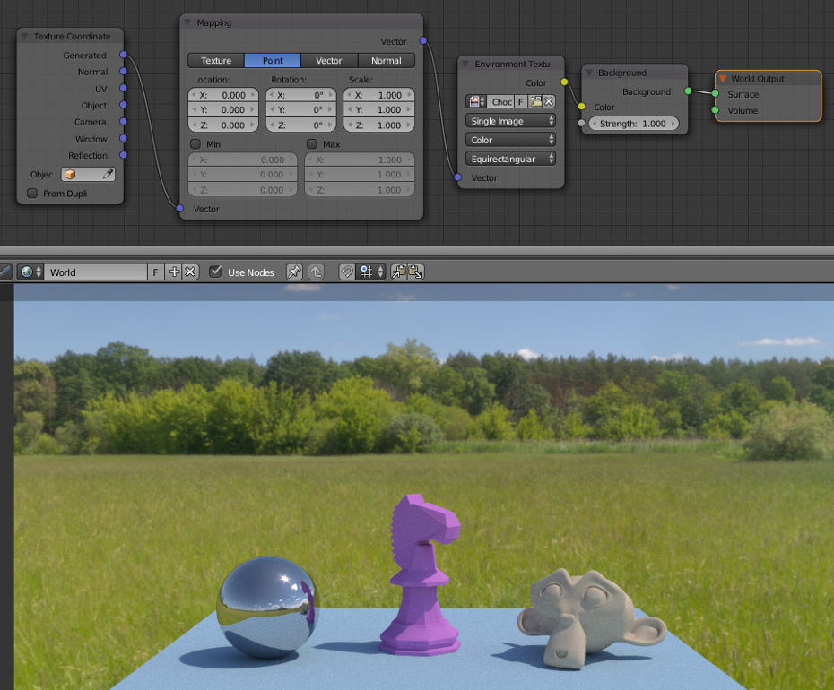
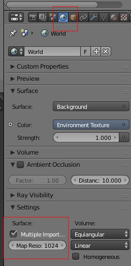
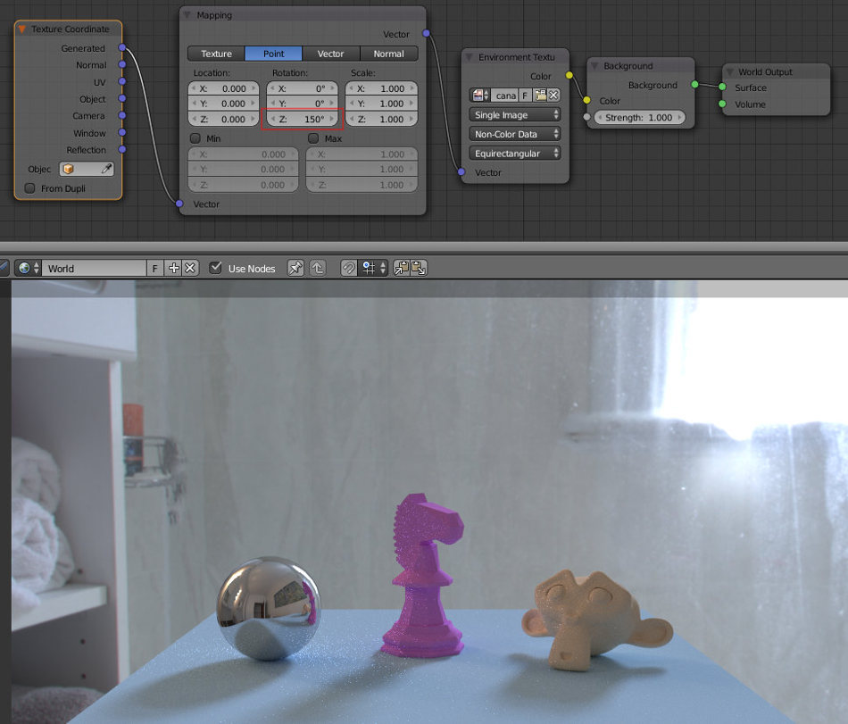
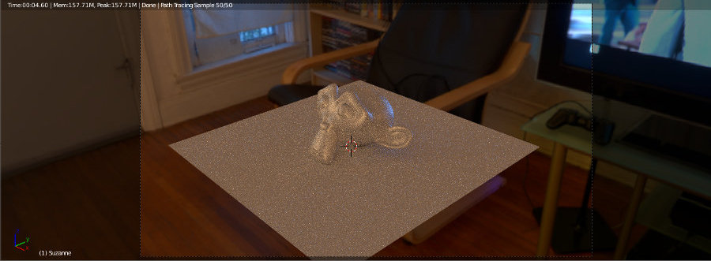
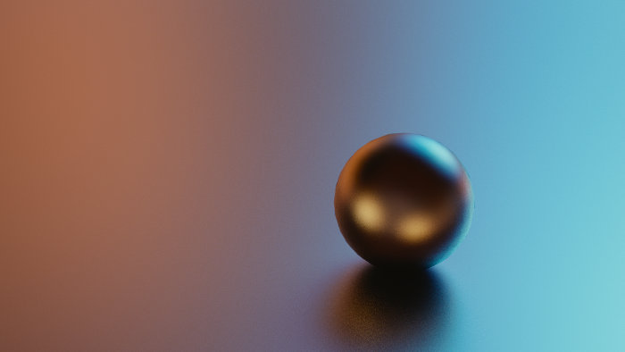
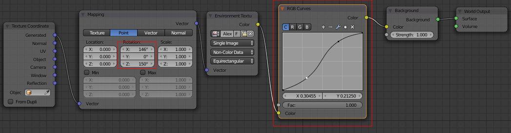
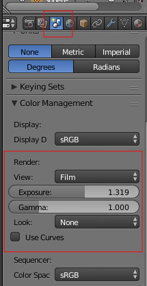
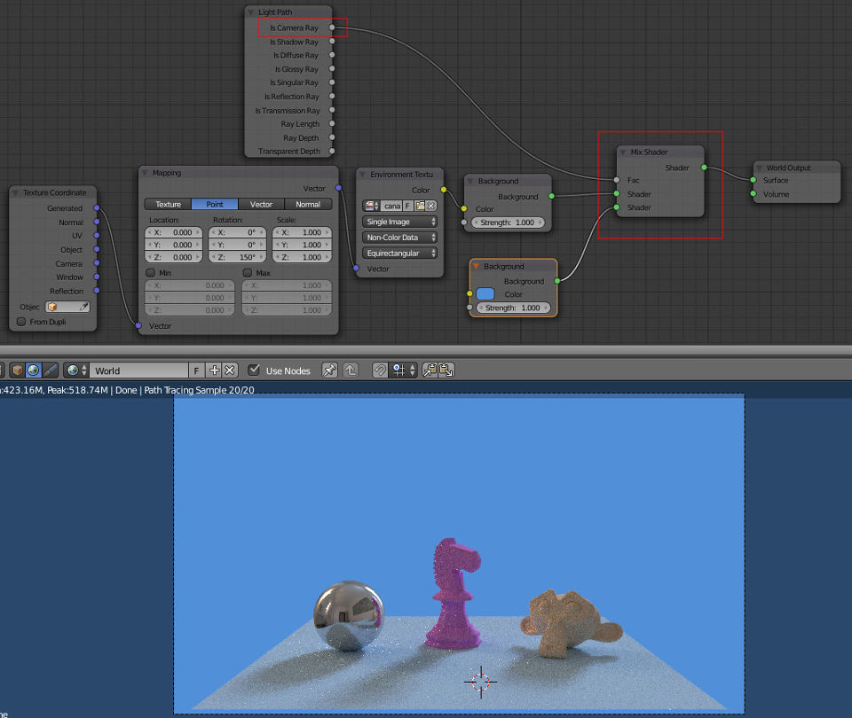

A iluminação baseada em imagem (Image-Based Lighting [IBL], em inglês) é uma técnica de iluminação em 3D que envolve a utilização de uma imagem enquanto representação omni-direcional da luz. Por outras palavras, utiliza uma imagem para controlar a iluminação da cena 3D criando efeitos de luz subtis e mais realistas. A imagem é projetada em cúpula ou em esfera no ambiente (environment) e utilizada para simular a iluminação dos objetos na cena.
Geralmente, as imagens utilizadas são fotografias e do tipo HDRI (High Dynamic Range Image). As fotografias permitem maior realismo e as imagens HDR permitem um elevado alcance dinâmico (tem mais dados entre o valor mais escuro e o mais claro). No entanto, é possível implementar esta técnica com qualquer tipo de imagem.
A utilização de HDRI tem vindo a tornar-se mais comum pois permite uma iluminação mais dinâmica, com maior diversidade, e maior exatidão nas cores e intensidades. Contudo, o tamanho dos ficheiros que armazenam este tipo de imagens (geralmente, dezenas de megabytes) e o custo de aquisição das mesmas (HDRI com qualidade profissional gratuitas são muito raras) geram desafios importantes para os artistas interessados.
É comum encontrar HDRI acompanhadas de outras versões mais leves, com menos qualidade mas também com menos megabytes. Geralmente, essas versões mais "leves" destinam-se a facilitar a utilização pelo artista. Por exemplo, pode utilizar a versão mais exata (mais pesada) para iluminar e uma versão mais leve para o fundo (veja o final desta página para perceber como pode fazer isso).
Neste exercício, iremos imagens HDR de exterior e de interior. Consulte a página Outro material de apoio e descarregue uma HDRI de exteriores e outra de interiores.
A imagem abaixo mostra como utilizar uma HDRI para criar uma iluminação ambiente (Environmental Lighting). Os dois nós à esquerda permitem manipular o mapeamento da HDRI. Por exemplo, se alterar o valor Z da Rotation no nó Mapping (coluna central), a HDRI vai rodar em torno do eixo Z e pode escolher o melhor ângulo.
É importante referir que na cena abaixo não é utilizada qualquer lâmpada! A única fonte de iluminação é a imagem utilizada como Environment Texture. Na esfera é possível ver o reflexo do sol.
Nós utilizados (esq. para dir.): Texture Coordinate (Input), Mapping (Vector), Environment Texture (Texture), Background, Output.
No painel World, foi ativada a opção Multiple Importance (especialmente importante quando são utilizadas cores não sólidas no ambiente) e foi aumentada a resolução. Esta resolução permite melhorar a qualidade da iluminação (retira noise) mas tem impacto na memória e no tempo de renderização.
Na imagem abaixo, a cena é iluminada apenas por uma imagem HDR capturada no interior de uma casa de banho. Não foi utilizada qualquer lâmpada.
Foi implementada uma rotação em Z (150º) na Environment Texture para a principal fonte de luz surgir à direita. Repare como as sombras dos objetos estão alinhadas com a janela da imagem. No entanto, a janela não é a única fonte de luz (atente nos reflexos da esfera).
Na imagem abaixo, foi utilizada outra HDRI de interiores. Repare na luz da televisão que surge refletida na nuca da Suzanne.
A imagem abaixo foi criada com um plano e uma esfera, ambos utilizam um material Glossy. A iluminação foi criada com uma HDRI, a mesma HDRI utilizada na imagem acima.
A HDRI foi rodada em X e em Z até permitir uma iluminação e reflexos interessantes (o azul que surge do lado direito é emitido pela televisão que surge na fotografia). Foi introduzido um nó de RGB Curves para manipular as cores e contrastes da HDRI, permitindo maior criatividade.
Nas opções da cena foram ainda ligeiramente alterados/experimentados alguns parâmetros de Color Management (gestão da cor).
Na imagem abaixo, é utilizada uma configuração de nós que permite separar a imagem de fundo da iluminação ambiente da cena. Por outras palavras, a iluminação da cena vem da HDRI mas o fundo é uma cor sólida (podia ser outra imagem). Repare que a iluminação é igual à da cena acima que utilizou uma HDRI capturada no interior de uma casa de banho.
Nós utilizados (esq. para dir.): Texture Coordinate (Input), Mapping (Vector), Environment Texture (Texture), 2 nós Background, Mix Shader, Light Path (Input) e World Output.
